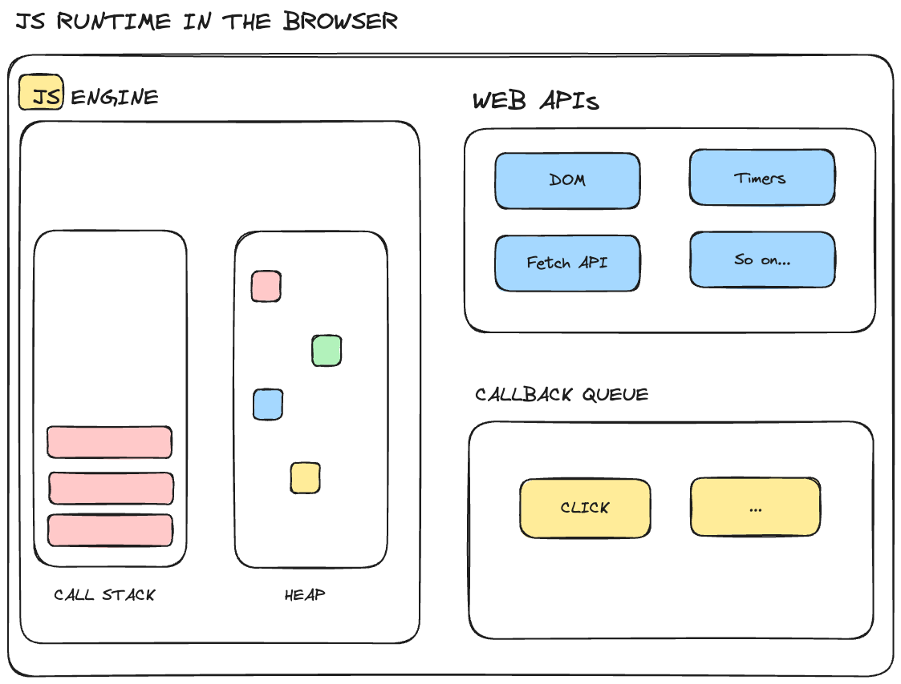

JavaScript
All web browsers contain a JavaScript execution environment to run scripts that program the dynamic behavior of web pages. Example behaviors are accepting user input or recognizing a button press.
<!DOCTYPE html>
<html>
<body>
<h2>What Can JavaScript Do?</h2>
<p>JavaScript can change HTML attribute values.</p>
<p>In this case JavaScript changes the value of the src (source) attribute of an image.</p>
<button onclick="document.getElementById('myImage').src='pic_bulbon.gif'">Turn on the light</button>
<img id="myImage" src="pic_bulboff.gif" style="width:100px">
<button onclick="document.getElementById('myImage').src='pic_bulboff.gif'">Turn off the light</button>
</body>
</html>
Try it here
In this example, button is an HTML element, and onclick is the Javascript
code that is called when the button is pressed.
The callback code accesses the element with id="myImage" and changes the src
field of the struct.
Web APIs
The browser runtime environments are sandboxed, which means the scripts access to the host environment is carefully controlled. However, the scripts do have access to the Web APIs in the runtime environment, and this is how all the work gets done.
From: [https://www.freecodecamp.org/news/javascript-engine-and-runtime-explained/]
Exploring Web APIs
Let's explore the canvas and img elements.
<!DOCTYPE html>
<html>
<body>
<canvas id="myCanvas" width="400" height="200" style="border:1px solid #000000;">
Your browser does not support the HTML canvas tag.
</canvas>
<script>
var canvas = document.getElementById("myCanvas");
var context = canvas.getContext("2d");
context.fillStyle = "blue";
context.strokeRect(10, 10, canvas.width-10, canvas.height-10);
canvas.addEventListener('click', clickReporter, false);
function clickReporter(event) {
const rect = canvas.getBoundingClientRect()
const x = event.clientX - rect.left
const y = event.clientY - rect.top
console.log("x: " + x + " y: " + y)
}
canvas.addEventListener('click', clickReporter, false);
</script>
</body>
</html>
The canvas looks like it could be useful. Let's try to load some images:
<!DOCTYPE html>
<html>
<body>
<script>
var CardNames = ['images/ace_of_clubs.png',
'images/6_of_clubs.png',
'images/jack_of_clubs.png',
'images/king_of_clubs.png'
];
CardNames.forEach(function(path) {
var img = document.createElement('img');
img.src = path;
img.alt = path;
document.body.appendChild(img);
});
</script>
</body>
</html>
Hmm, the cards look good, but they're too big. Let's try to scale them down.
function resizeImage(image, maxSize) {
var icanvas = document.createElement('canvas');
var width = image.width;
var height = image.height;
// Calculate the new dimensions, maintaining the aspect ratio
if (height > width) {
width *= maxSize / height;
height = maxSize;
}
else {
height *= maxSize / width;
width = maxSize;
}
// Set the canvas dimensions to the new dimensions
icanvas.width = width;
icanvas.height = height;
// Draw the resized image on the canvas
var ctx = icanvas.getContext('2d');
ctx.drawImage(image, 0, 0, width, height);
ctx.fillStyle = "black";
ctx.strokeRect(0, 0, width-1, height-1);
document.body.appendChild(icanvas);
}
Let's put the canvas and the image together:
var canvas;
var context;
var Cards = new Array();
var next = 0;
function getCursorPosition(event) {
const rect = canvas.getBoundingClientRect();
const x = event.clientX - rect.left;
const y = event.clientY - rect.top;
console.log("x: " + x + " y: " + y + " next: " + next);
context.drawImage(Cards[next], x, y);
next = next + 1;
if (next >= 4) {
next = 0;
}
}